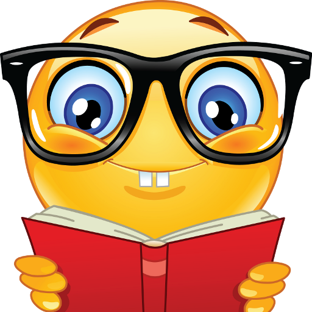

O começo
Para ser sincero, eu nem sei como viramos amigos. Você olhava para a mesma menina que eu — na minha cabeça, éramos rivais. Mas com o tempo naquela escolinha, fomos nos aproximando. Não éramos tão próximos como agora, mas desde aquele tempo já éramos amigos. Eu lembro bem que eu comia suas borrachas hahaha! Já era icônico desde aquela época, né? E no final, nem eu e nem você — ficamos na merda, como sempre hahaha.
Escola
Nós éramos nerds ferrados, só sabíamos competir. Depois que juntamos a tropa, livro pra gente era igual mulher casada: a gente sabia que existia, mas se recusava a olhar hahahaha.
Momentos Especiais
cara, aqui eu não tenho muito o que falar, pois eu não me recordo de muita coisa. Minha cabeça estava sempre perdida em outros assuntos. Por isso, em todos os nossos momentos, eu nunca os guardei com o carinho que deveria. Me arrependo, mas são coisas da vida, né?